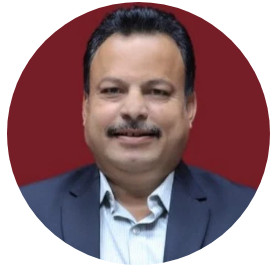

.png)


Sreenidhi Institute Of Science and Technology
Because life is all about taking right decisions
IT-Vision & Mission
Vision:
- To achieve excellence in Engineering Science and Technology and to produce professionally competent, socially sensitive, skilled intellectual IT professionals to meet the current and future challenges of the modern computing industry in the global scenario.
Mission
- To be committed in providing quality education in professional core and multidisplinary areas with continuous upgradation and to prepare IT graduates succeed in industry as an individual and as a team.
- To inspire and encourage the graduates to use modern tools, design and create novelty based products supporting technology innovation to meet the needs of industry and society.
- To continuously engage in research and projects development, to instill leadership and planning for the effective and strategic use of emerging technologies to attain sustainability.

Dr. Sunil
Bhutada
HOD, IT
Dept.
Short Term Goals:
- R&D in the areas of Data warehousing and Mining, Network Security and Cryptography and Consultancy.
- To establish Center of Excellence in the area of Network Security and Cryptography
- Liaison with national labs, academic institutions and industry
- To organize an International Conference
- Starting of In-house journal
- To establish an Entrepreneurship Development and Innovation Centre with multidisciplinary approach to promote commercialization of projects completed by the students at UG and PG level
- To strengthen the existing Center for Services to community and empower the unemployed youthTo establish an Entrepreneurship Development and Innovation Centre with multidisciplinary approach to promote commercialization of projects completed by the students at UG and PG level
Long Term Goals:
- Liaison with International institutions in R&D,
- Apply for Research grants with international collaboration
- Engage in Research leading to patents at national and international level
Program Outcomes(PO's)
Engineering Graduates will be able to:
- Engineering knowledge: Apply the knowledge of Engineering Mathematics, Basic Sciences, Engineering Fundamentals, and Engineering Specialization to the solution of complex Information Science and Engineering problems.
- The engineer and society: Apply reasoning informed by the contextual knowledge to assess societal, health, safety, legal and cultural issues and the consequent responsibilities relevant to the professional engineering practice in Information Science and Engineering.
- Modern tool usage: Create, select, and apply appropriate techniques, resources, and modern engineering and IT tools including prediction and modelling to complex engineering activities with an understanding of the limitations in Information Science and Engineering.
- Conduct investigations of complex problems: Use research-based knowledge and research methods including design of experiments, analysis and interpretation of data, and synthesis of the information to provide valid conclusions in Information Science and Engineering.
- Design/development of solutions: Design solutions for complex Information Science problems and design system components or processes of Information Science and Engineering that meet the specified needs with appropriate consideration for the public health and safety, and the cultural, societal, and environmental considerations.
- Communication: Communicate effectively on complex Information Science engineering activities with the engineering community and with society at large, such as, being able to comprehend and write effective reports and design documentation, make effective presentations, and give and receive clear instructions.
- Individual and team work: Function effectively as an individual, and as a member or leader in diverse teams, and in multidisciplinary settings.
- Ethics: Apply ethical principles and commit to professional ethics and responsibilities and norms of the Information Science and Engineering practice.
- Life-long learning: Recognize the need for, and have the preparation and ability to engage in independent and life-long learning in the broadest context of technological change
- Project management and finance: Demonstrate knowledge and understanding of the engineering and management principles and apply these to one’s own work, as a member and leader in a team, to manage projects and in multidisciplinary environments.
- Life-long learning: Recognize the need for, and have the preparation and ability to engage in independent and life-long learning in the broadest context of technological change
Program Specific Outcomes (PSOs) are statements that describe what the graduates of a specific engineering program should be able to do. On completion of the B.Tech.(Information Technology) program the graduates will be able to
- Solve real time problems using cutting edge technologies like IOT, Data Science, AI, Big Data and Cloud Computing, identify research gaps and hence provide innovative, novel and feasible solutions to the existing and future problems.
- Design and develop software programs and projects using software engineering practices, mathematical methodologies, algorithms and model real world problems using appropriate programming languages and efficient tools.
- Apply and understand the principles of computer-based systems to acquire professional skills and knowledge in Information Technology.